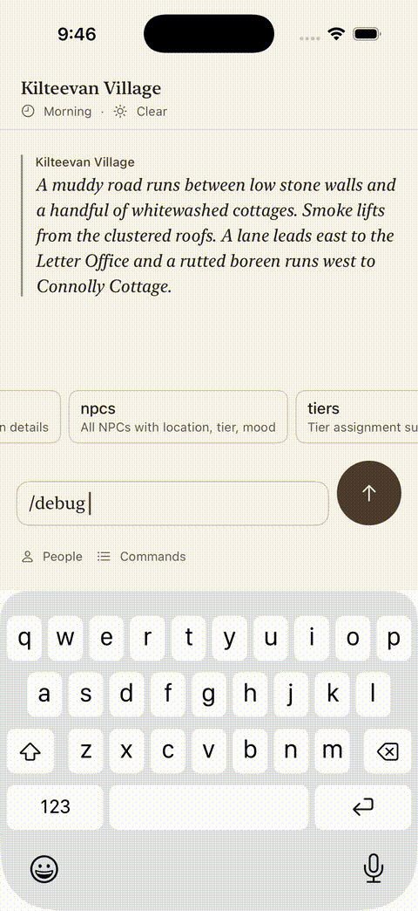

In an iOS Simulator run, sending a bug report shows the success notice and clears the submitted command from the composer. The simulator UI test also confirms the command never becomes a game turn.
Evidence: iOS Simulator, not a physical iPhone.
